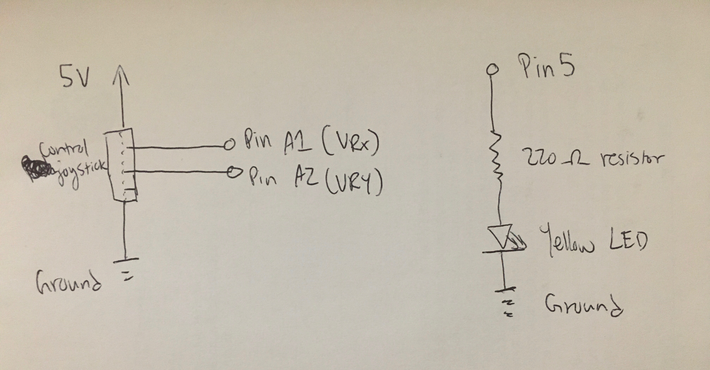
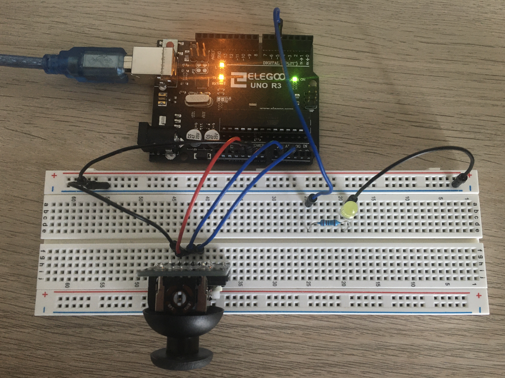

Schematic

There were two parts of the circuit being used. One involved the control joystick, which requires power, ground, and wires for the X, Y,
and click values. However, I did not use the click part of the control joystick—it appears that this unit was faulty and
the clicks (when the joystick is pushed down and the audible click sound made) do not register with the Arduino. The second circuit
was for the output part, which would cause the yellow LED to light up whenever the mouse was pressed. As whas been done in the past,
the P=IV equation was used to confirm the minimum amount of resistance needed, 160 ohms (5V-1.8V / 0.02A). Thus, the 220 ohm resistor
was chosen as it was above the minimum, but not by too much.
Circuit (Image)

Here, the circuit with the two distinct parts is visible. The control joystick was placed at the extreme edge of the breadboard to allow
full down movements for the joystick. It also provided an easier time wiring up the joystick to the Arduino, since the wires could be
placed behind the joystick and plugged into the Arduino without super long wires. The yellow LED part was fairly straightforward, with the
resistor there to prevent infinite current. To finish up, both the control joystick and LED are connected to ground.
Firmware (Code Snippet)
// Store the character from a mouse press to be transmitted through Serial from webpage to Arduino
char receivedChar;
// Boolean for checking if another mouse press was sent from the webpage to Arduino
boolean newData = false;
void setup() {
// put your setup code here, to run once:
// Initialize encoding speed
Serial.begin(9600);
// set the timeout for parseInt
Serial.setTimeout(10);
// Initialize pin 5 as an output pin for the LED
pinMode(5, OUTPUT);
}
void loop() {
// put your main code here, to run repeatedly:
// Store X val from control joystick
int s1 = analogRead(1);
// Store Y val from control joystick
int s2 = analogRead(2);
// Not used in circuit, but would store whether joystick is pressed or not
int s3 = digitalRead(10);
// Serial.prints used to create an array using s1, s2, and s3 on the same line
Serial.print("[");
Serial.print(s1);
Serial.print(",");
Serial.print(s2);
Serial.print(",");
Serial.print(s3);
// Send the finished array by indicating a newline
Serial.println("]");
// Call the recvOneChar method to check for anything received from Serial
recvOneChar();
// Call the showNewData method to display the character received and operate LED
showNewData();
// Turn LED off after showNewData is completed, regardless of whether it was on or off
digitalWrite(5, LOW);
// Wait a moment before looping again
delay(20);
}
// Check to see if anything was received from Serial
void recvOneChar() {
// Mouse click creates the letter "p" to be transferred over, resulting in a value greater than 0
if (Serial.available() > 0) {
// Save the received character to a variable
receivedChar = Serial.read();
// Set the newData variable to true to indicate the presence of new data, and a mouse being pressed
newData = true;
}
}
// Print out in Serial that data was received
void showNewData() {
// Check if new data exists as of the current loop
if (newData == true) {
// If new data exists, print out a line to indicate it being received
Serial.print("This just in ... ");
// Print out the received character
Serial.println(receivedChar);
// Turn the LED on
digitalWrite(5, HIGH);
// Keep the LED on for 200 ms
delay(200);
// Reset the variable for checking if new data exists
newData = false;
}
}
The Arduino code was largely borrowed from the L8 and L9 lectures. The Serial character receiving and detecting
was borrowed from the Arduino Forum megathread "Serial Input Basics" (https://forum.arduino.cc/index.php?topic=288234.0).
The code first forms an array with sensor data from the control joystick. Then, it sends that over to the webpage via Serial.
Then, the program proceeds to check if anything was received from the webpage via Serial. The program only checks for
mouse presses to turn on and off the yellow LED light—keeping it simple! The use of local and global variables ultimately
helped make this program possible.
p5.js (Code Snippet)
var serial; // variable to hold an instance of the serialport library
var portName = '/dev/tty.usbmodem14601' //rename to the name of your port
var dataarray = []; //some data coming in over serial!
var xPos = 0; // start the x position at 0
function setup() {
serial = new p5.SerialPort(); // make a new instance of the serialport library
serial.on('list', printList); // set a callback function for the serialport list event
serial.on('connected', serverConnected); // callback for connecting to the server
serial.on('open', portOpen); // callback for the port opening
serial.on('data', serialEvent); // callback for when new data arrives
serial.on('error', serialError); // callback for errors
serial.on('close', portClose); // callback for the port closing
serial.list(); // list the serial ports
serial.open(portName); // open a serial port
createCanvas(1200, 800); // define the boundaries for the graphics
background(0x08, 0x16, 0x40); // reset the background
}
// get the list of ports:
function printList(portList) {
// portList is an array of serial port names
for (var i = 0; i < portList.length; i++) {
// Display the list in the console:
print(i + " " + portList[i]);
}
}
// Let user know of a successful connection to server
function serverConnected() {
print('connected to server.');
}
// Let user know of a successful connection opening of serial port
function portOpen() {
print('the serial port opened.')
}
// Let user know of an error with serial port
function serialError(err) {
print('Something went wrong with the serial port. ' + err);
}
// Let user know serial port successfully closed
function portClose() {
print('The serial port closed.');
}
// Check for any Serial events
function serialEvent() {
// when a new line is available over Serial
if (serial.available()) {
var datastring = serial.readLine(); // readin some serial
// Set up a new array to hold the data
var newarray;
// Try parsing the data into the array
try {
newarray = JSON.parse(datastring); // can we parse the serial
// If data is not parsable, log the error
} catch(err) {
console.log(err);
}
// If the new array was successfully made, store array in global dataarray
if (typeof(newarray) == 'object') {
dataarray = newarray;
}
// Print out the data received
console.log("got back " + datastring);
}
}
// Listen for user mouse presses
function mousePressed() {
// When mouse is pressed, write "p" for pressed over Serial
serial.write("p");
// Display in console that key was pressed
console.log("key pressed");
}
// Create the graph lines depending on joystick inputs
function graphData(newData) {
// map the range of the input to the window height:
var yPos = map(newData, 0, 1023, 0, height);
// draw the line
line(xPos, height, xPos, height - yPos);
// at the edge of the screen, go back to the beginning:
if (xPos >= width) {
xPos = 0;
// clear the screen by resetting the background:
background(0x08, 0x16, 0x40);
} else {
// pass
}
}
// Define the color of the lines
function draw() {
stroke('rgba(183,165,122,1)'); // UW gold
// Create the golden line plot for this frame
graphData(dataarray[0]);
stroke('rgba(75,46,132,1)'); // UW purple
// Create the purple line plot for this frame
graphData(dataarray[1]);
// Increase the X position (left to right direction)
xPos++;
}
The code is borrowed from the HCDE 439 GitHub repository, specifically Example 2 (https://github.com/machineagency/hcde439/blob/master/p5-examples-and-addons/hcde439-example2/sketch.js)
that was gone over during class. I had originally hoped to create a cooler ball bouncing animation with a fading tail, but I couldn't
get the color values to update correctly after a couple hours, and decided to switch to more of what was already provided to us.
I was, however, able to change the line colors to be more representative of UW's brand identity—purple and gold.
In addition, the event listening function for mouse pressed was added. Console printouts were included throughout the program
to better understand and debug any errors that might occur. Note: the joystick has values from 0-1023, corresponding to the amount of tilt,
so the values in each direction in the program were mapped to the maximum height of the canvas to prevent out-of-bounds drawing,
which wouldn't look too good since we wouldn't be able to see the combination of purple and gold spikes as easily or prominently.
The mousePressed documentation may be found here: https://p5js.org/reference/#/p5.Element/mousePressed. Lastly, the UW brand colors
were sourced from the brand guidelines here: https://www.washington.edu/brand/graphic-elements/primary-color-palette/.
Circuit Operation (Animated GIF)

Here, the joystick's moving-wiggling-jiggling capabilities were shown, in addition to the yellow LED light turning on and then off after a mouse is pressed.

Here, the program is seen running. The Serialcontrol is operating with a stable connection to the USB modem port as displayed by the GUI.
The Arduino program is also seen open, as it was the program uploaded to run in the Arduino. Lastly, the local webpage is open
to show the graph being drawn and the mouse being pressed. Lots of things working together to make sure the webpage and Arduino can
communicate with each other. They say communication in real life is hard, but wow, it doesn't get easier in the digital realm either!